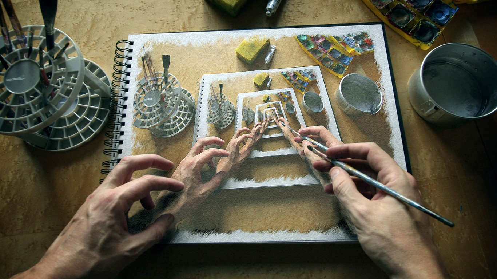

前端对于网站来说，通常是指，网站的前台部分包括网站的表现层和结构层。因此前端技术一般分为前端设计和前端开发，前端设计一般可以理解为网站的视觉设计，前端开发则是网站的前台代码实现，包括基本的HTML和CSS以及JavaScript，现在最新的高级版本HTML5、CSS3，以及SVG等。
WEB前端如果要编写网站后台，现在比较流行的语言有JSP、asp、PHP等等。另外还有java和c#等也常用作网站后台编辑语言。单纯而言语言各自有各自的优势，针对性不同。就应用而言，各有各的方向，举例来说：asp多用作中小型企业网站的制作，因其成本比较低（这个只是针对国内而言），也有做论坛的，如动网；而jsp的话针对的是访问量大的网站，比如银行之类的网站；PHP做中小型企业站的也有，但做论坛方面的比较多.
WEB后端美术的工程师(Art Engineer)，一般出身于艺术美术院校的艺术设计专业居多，根据工作性质分类为：网页美工，一般需要精通Photoshop等设计软件，对平面，色彩 ，基调，创意等进行处理。美工专业大部分因为电子商务的兴起而发展的职业，主要负责公司形象包装、网站优化、产品宣传画册、电子商务专题设计等工作。 三维美工 是由美工用3DMAX丶maya等的三维角色模型设计，道具模型设计，环境场景模型设计，包装设计等
UI设计 移动开发也称为手机开发，或叫做移动互联网开发。是指以手机、PDA、UMPC等便携终端为基础，进行相应的开发工作，由于这些随身设备基本都采用无线上网的方式，因此，业内也称作为无线开发。
C++是C语言的继承，它既可以进行C语言的过程化程序设计，又可以进行以抽象数据类型为特点的基于对象的程序设计，还可以进行以继承和多态为特点的面向对象的程序设计。C++擅长面向对象程序设计的同时，还可以进行基于过程的程序设计，因而C++就适应的问题规模而论，大小由之。
C++开发